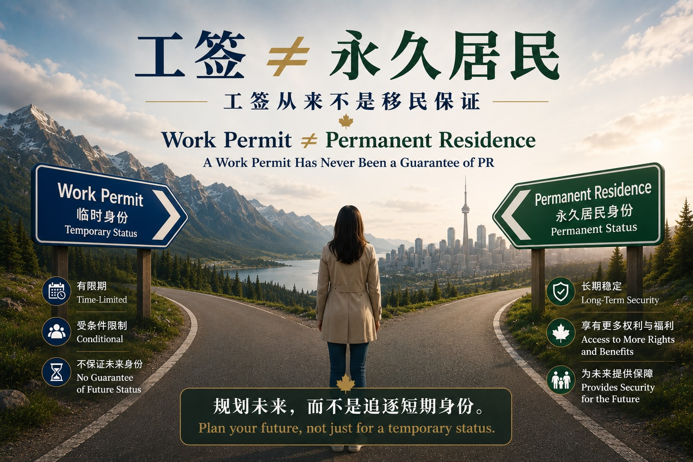

工签从来不是移民保证：阿省教育政策传闻背后的真正信号
最近，网上流传一个说法：阿尔伯塔省可能不再为工签持有人子女提供免费公立教育。
很多家长看到这类消息后，第一反应是担心：“拿了工签，孩子以后还能不能免费读书？” 但在我看来，这个问题背后真正值得关注的，不只是阿省的教育政策，而是加拿大整体移民环境正在发生变化。
过去几年，很多人习惯了一个说法：“先拿工签，以后再转移民。” 甚至市场上还出现了很多类似宣传，例如“陪读妈妈转移民”“低技能工签转移民”“先来加拿大工作，之后自然就能拿 PR”。
这些说法让很多申请人误以为，工作许可本身就是一条稳定的移民路径。但事实上，从加拿大移民法的角度来说，工签一直都是临时身份。它从来不等于永久居民身份，也从来不会自动通向永久居民身份。
为什么疫情期间看起来“工签转移民”比较容易？
疫情期间，加拿大经历了非常特殊的劳动力市场变化。一方面，很多临时居民离开加拿大；另一方面，许多行业出现严重劳动力短缺。餐饮、农业、护理、零售、物流、服务业等行业都面临招聘困难。
在这种情况下，加拿大政府推出了大量临时性、过渡性或放宽性的政策，包括更多工作许可机会、部分低技能职业移民路径、临时居民转永久居民项目，以及部分省提名项目的扩张。
这些政策确实帮助了一批临时居民获得永久居民身份。但问题在于，很多人把特殊时期的特殊政策，误认为是加拿大移民制度的常态。
疫情期间的政策环境，并不代表加拿大长期移民政策的基本逻辑。
现在移民为什么越来越难？
疫情之后，加拿大面对的问题发生了变化。住房紧张、医疗系统压力、学校容量不足、基础设施承载力有限，这些问题逐渐成为政府制定移民政策时必须考虑的重要因素。
因此，从 2024 年开始，加拿大联邦及各省陆续收紧临时居民和永久居民相关政策。很多以前看起来可行的路径，现在变得更加不确定。
这也意味着：有工签，不代表一定能移民。申请人是否能最终获得永久居民身份，仍然取决于很多因素，例如：
- 职业是否符合当前移民项目要求；
- 语言成绩是否有竞争力；
- 年龄、学历、工作经验是否足够；
- 是否有省提名机会；
- 所在省份是否仍有名额；
- 政策是否发生变化；
- 雇主是否长期支持；
- 申请人是否能在身份到期前完成衔接。
现在很多人虽然人在加拿大，也合法工作，但仍然找不到明确的 PR 路径。这种情况已经越来越常见。
阿省的情况为什么引起关注？
Alberta 最近之所以受到关注，是因为该省正在重新审视临时居民对公共资源的影响。
近年来，不少 BC 省国际学生和陪读家庭转向阿省。原因包括生活成本、就业机会，以及子女教育和医疗福利等因素。
有些家庭的模式是：孩子以国际学生身份就读，家长陪读后再申请工作许可。家长取得工签后，孩子可能符合免费就读公立学校的条件，家庭成员也可能符合省医疗保险资格。从家庭角度看，这是非常合理的规划。
但从省政府和本地居民角度看，如果短时间内大量临时居民进入一个省份，就会对学校、医疗和公共服务造成明显压力。
这也是为什么阿省开始讨论是否要重新评估临时居民可以享有的公共服务范围，以及是否要让省政府在临时居民数量和公共资源分配方面拥有更多控制权。
重要提醒：截至目前，相关讨论并不等于已经正式实施新的收费政策。工签持有人子女是否可以免费读书，仍然要以 Alberta 现行教育政策、学校局要求及个案具体情况为准。
这件事释放了什么信号？
关于此事的讨论不是孤立事件。它反映出加拿大各级政府正在重新思考一个问题：临时居民可以在多大程度上享受与永久居民或公民相近的公共资源？
过去几年，加拿大大量依赖临时居民来补充劳动力和推动经济增长。但与此同时，医疗、教育和公共服务系统并没有同步扩张。
当临时居民人数快速增加，而公共资源承载能力不足时，政策调整就很可能发生。
这并不一定意味着加拿大不再欢迎临时居民，而是意味着加拿大正在重新划清临时身份与永久身份之间的界限。
工签的本质必须被重新认识
工作许可的作用，是允许申请人在特定条件下在加拿大工作。
它不是永久身份，也不是移民批准，更不是政府对未来 PR 的承诺。
如果申请人只看到“可以工作”“孩子可以上学”“可以享受部分福利”，却没有认真评估未来是否有可行的永久居民路径，那么几年后可能会面临非常被动的局面。
尤其是带孩子来加拿大的家庭，更不能只考虑眼前的学校和工签，还要提前考虑：
- 家长未来是否有 PR 路径；
- 孩子的学习身份如何衔接；
- 工签到期后是否还能续签；
- 如果 PR 申请不顺利，全家是否有备用方案；
- 所在省份政策是否稳定；
- 家庭能否承受政策变化带来的成本。
Ellen 的建议
我一直提醒客户不要把“拿到工签”当作最终目标，而是需要从一开始就评估工签之后是否有清晰、现实、可执行的永久居民路径。
疫情期间的宽松政策让很多人误以为，加拿大移民是一件很容易的事情。但现在的政策环境已经明显不同。
未来，加拿大很可能会继续区分临时居民与永久居民之间的权利和福利。对于希望长期留在加拿大的申请人来说，越早规划，越能减少未来的不确定性。
工签可以是进入加拿大工作和生活的一步，但它不应该被误解为移民的保证。
在当前政策环境下，申请人和家庭更需要的是完整的身份规划，而不是只追逐一个短期身份。
A Work Permit Has Never Been a Guarantee of Permanent Residence
Recently, media reports and social media discussions have raised concerns that Alberta may stop providing free public education to children of certain work permit holders.
Many families immediately ask the same question: “If we come to Canada on a work permit, will our children still be able to attend public school for free?”
While this is certainly an important question, I believe the more significant issue is not Alberta’s education policy itself. Rather, it reflects a broader shift in Canada’s immigration landscape.
A work permit has always been a temporary immigration status. It is not permanent residence, nor has it ever guaranteed permanent residence.
Why Did It Seem Easier During the Pandemic?
During the COVID-19 pandemic, Canada experienced an unprecedented labour shortage. Many temporary residents left the country, while numerous industries struggled to recruit workers.
To stabilize the labour market, both the federal government and provincial governments introduced exceptional measures, including expanded work permit opportunities, additional immigration pathways for certain lower-skilled occupations, temporary pathways from temporary resident to permanent resident, and expanded Provincial Nominee Programs.
These measures helped many temporary workers become permanent residents. However, many people mistakenly viewed these extraordinary policies as the normal operation of Canada’s immigration system.
Why Has Immigration Become More Difficult?
After the pandemic, Canada’s priorities changed. Housing shortages, healthcare pressures, school capacity limitations, and infrastructure challenges have become central policy concerns.
Today, holding a valid work permit no longer implies that permanent residence will eventually follow.
Increasingly, many foreign workers are legally employed in Canada but still have no realistic pathway to permanent residence.
Why Is Alberta Receiving So Much Attention?
Alberta has recently become the focus of public discussion because the provincial government is reviewing how temporary residents access publicly funded services.
In many cases, a parent obtains a work permit while accompanying a child studying in Alberta. Once eligible, the child may attend public school without international tuition, and the family may also qualify for provincial health coverage.
From an individual family’s perspective, this is a reasonable immigration strategy. However, from the provincial government’s perspective, a rapid increase in temporary residents may place significant pressure on schools, healthcare services, housing, and other public resources.
It is important to emphasize that policy discussions and political proposals do not automatically become law. Families should continue relying on official government policies rather than headlines or social media speculation.
What Does This Debate Really Tell Us?
The Alberta discussion is part of a much broader trend across Canada. Governments are increasingly asking how temporary residents should access publicly funded benefits compared with permanent residents and Canadian citizens.
This does not necessarily mean Canada is becoming less welcoming. Rather, it signals that governments are placing greater emphasis on the distinction between temporary immigration status and permanent immigration status.
Ellen’s Perspective
For many years, I have encouraged clients to view a work permit as only one step in a much larger immigration journey. The ultimate goal should never be simply obtaining temporary status.
A work permit may open the door to Canada. Only a well-designed immigration strategy can help keep that door open.
This article is for general information only and does not constitute legal advice or immigration advice for any specific case.
本文仅供一般信息参考，并不构成针对任何具体个案的法律意见或移民建议。